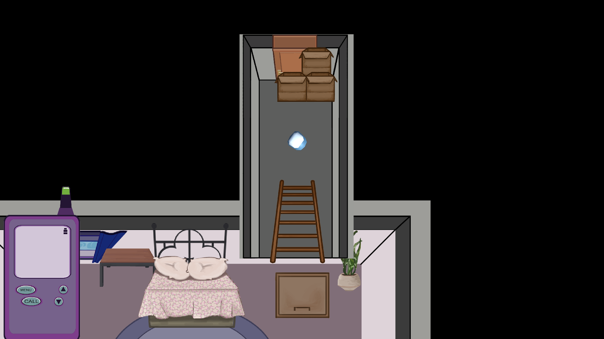

Paper Route
You are trapped and must find you way to the attic with the help of your walkie-talkie friend.
Made with
Unity and C#
for the Global Game Jam 2018
Completed January 2018

The Temple of Tezcatlipoca
You must reflect a beam of light using the ancient aztec mirrors to unlock your escape route.
Made with
Unity and C#
for the Game Dev Society 2017 Jam #1
Completed November 2017

Sonar
A 2D game where you play as a bat navigating a randomly generated cave using only your sonar wave.
Made with
Unity and C#
for the Global Game Jam 2017
Completed January 2017